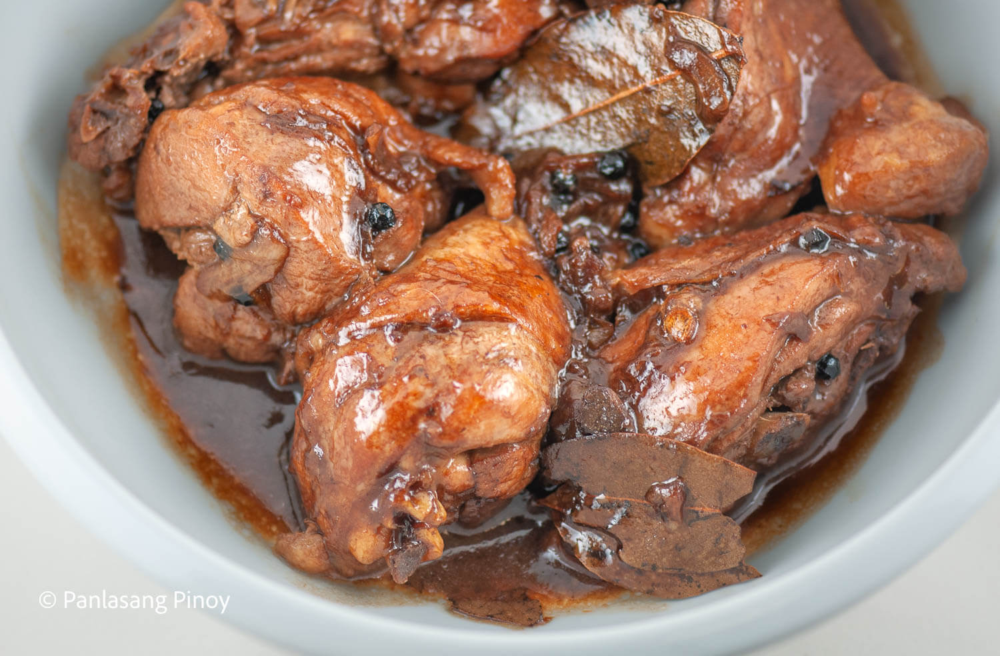

Chicken Adobo Recipe
Description
Chicken slices cooked in soy sauce and vinegar with garlic. This is a delicious Filipino chicken dish that you can eat for lunch with warm white rice.
Ingredients
- 2 lbs chicken
- 3 pieces dried bay leaves
- 4 tbsp soy sauce
- 6 tbsp white vinegar
- 5 cloves garlic
- 1 ½ cups water
- 3 tbsp cooking oil
- 1 tsp sugar
- ¼ tsp salt
- 1 tsp whole peppercorn
Steps
- Combine chicken, soy sauce, and garlic in a large bowl. Mix well. Marinate the chicken for at least 1 hour. Note: the longer the time, the better.
- Heat a cooking pot. Pour cooking oil.
- When the oil is hot enough, pan-fry the marinated chicken for 2 minutes per side.
- Pour-in the remaining marinade, including garlic. Add water. Bring to a boil.
- Add dried bay leaves and whole peppercorn. Simmer for 30 minutes or until the chicken gets tender.
- Add vinegar. Stir and cook for 10 minutes.
- Put-in the sugar, and salt. Stir and turn the heat off. Serve hot. Share and Enjoy!